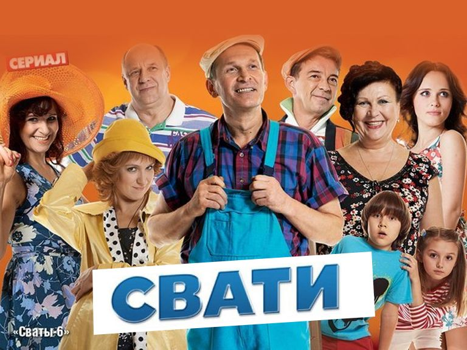
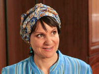
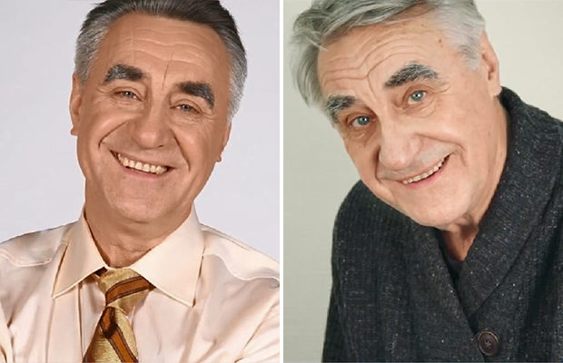

Мой любимий сериал
Мой любимій сериал Свати.«Свати» (рос. Сваты) — російськомовний телесеріал, вироблений в Україні.
Прем'єра 2-серійного першого сезону під назвою «Свати» відбулася 28 грудня 2008 року на Інтері (Україна)[1] та 16 грудня 2009 року на Россія-1 (Росія).[2] Прем'єра 2-серійного другого сезону під назвою «Свати 2» відбулася 10 листопада 2009 року на Інтері (Україна) та 17 грудня 2009 року на Россія-1 (Росія).[2] Прем'єра 12-серійного третього сезону під назвою «Свати 3» відбулася 11 листопада 2009 року на Інтері (Україна) та 18 грудня 2009 року на Россія-1 (Росія).[2] Прем'єра 16-серійного четвертого сезону під назвою «Свати 4» відбулася 15 листопада 2010 року на Інтері (Україна) та 22 листопада 2010 року на Россія-1 (Росія). Прем'єра 16-серійного п'ятого сезону під назвою «Свати 5» відбулася 5 грудня 2011 року на Інтері (Україна) та 19 грудня 2011 року на Россія-1 (Росія). Прем'єра заключного 16-серійного шостого сезону під назвою «Свати 6» відбулася 11 березня 2013 року на «1+1» (Україна)[3] та 1 жовтня 2013 року на Россія-1 (Росія).
З листопаду 2017 року по червень 2019 року всі шість сезонів серіалу були заборонені до показу в Україні, оскільки в серіалі знімалися російські актори з «Переліку митців-українофобів, які створюють загрозу нацбезпеці України», які зробили публічні анти-українські заяви що підривали суверенітет України та/або порушили державний кордон України.[4].
Больше информации Свати

Мои любимие герои
- Ольга Николаевна Ковалёва (с 6 сезона — Беркович; урождённая Котеева), мать Максима, мачеха Кати Беркович (сезоны 5—7), в 1—4 сезонах — супруга Юрия Анатольевича, позже — Александра Александровича Берковича; главный бухгалтер института, бабушка Жени, Вики и Никиты
Юрий Анатольевич Ковалёв, отец Максима, супруг Ольги Николаевны; профессор философии в институте Берковича, дедушка Жени, Вики и Никиты. По сюжету сериала умер между событиями 4 и 5 сезонов
 Валентина Петровна Будько, мать Маши, супруга Ивана Степановича; младший технолог на хлебозаводе, бабушка Жени, Вики и Никиты
- Иван Степанович Будько, отец Маши, супруг Валентины Петровны; заведующий гаражом на хлебозаводе, ныне заведующий гаража, дедушка Жени, Вики и Никиты